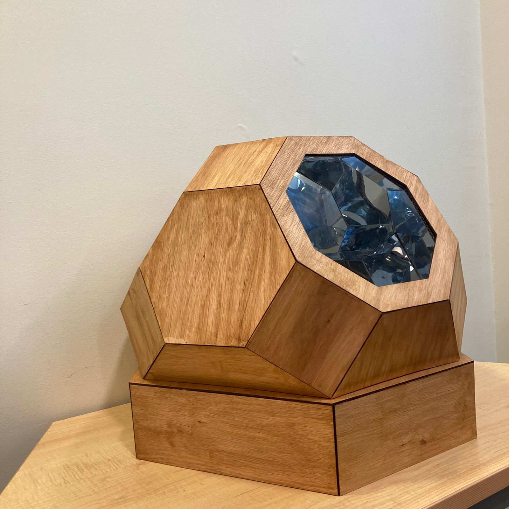

IllumEgo
El presente proyecto, fue trabajado alfinal de un semestre. Este consta de un domo espejado que invita a tener una experiencia multisensorial, inmersiva y personal, a través de diferentes colores, sonidos e imágenes que aportaban a inducir la experiencia.
- Integrantes: Catalina Alvarez, Javiera Astudillo, Aylen Bassaletti y Guiliana Pimentel
- Fecha: 14/12/2023
- Temática: Experiencia de usuario.
- Recursos usados: Modelado 3D, corte laser, Arduino y Processing.